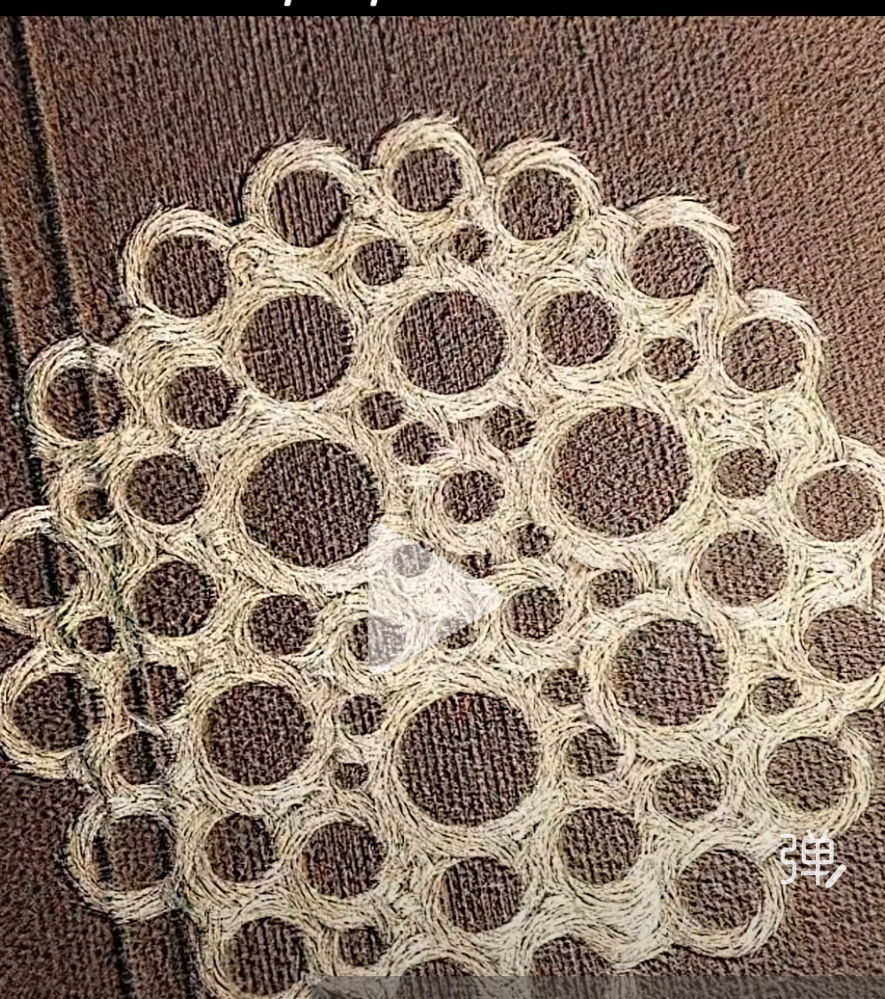

20260831麦田怪圈 与 心法 至小无内
原始对话记录
麦田怪圈
至小无内之
精密填充图
[呲牙][呲牙][呲牙][呲牙]

这就是咱们的至小无内图
以下为编者整理的主题文章
编者整理 · 主题文章
麦田怪圈，至小无内的图
导读：这一页短，两张图，几行字。一张麦田怪圈，底下一句："麦田怪圈，至小无内之精密填充图。"另一张图，配一句："这就是咱们的至小无内图。"
这一页很短。先是一张麦田怪圈的照片，底下一句："麦田怪圈，至小无内之精密填充图。"后面跟几个笑脸。再一张图，配一句："这就是咱们的至小无内图。"
就这些。
"至小无内"四个字，在这套体系里和"至大无垠"是一对。别处讲过："至大无垠，至小无内，我已经讲的一清二楚了。要用几年，几十年去勤修。"
至大无垠那一头，是放光。《光芒照耀三千大千世界》里，观想自己放光，从自己房间一级一级放大，一直到无数宇宙，"看自己能想到哪一步"，那叫至大无垠心。
至小无内这一头，记录拿麦田怪圈来比。一张压出来的图，线条精密，一圈套一圈，越往里越细。按这个说法，心法里也有这样一个方向，往极细里去。
他也讲过，心法就是练光明，练意念力、专注力，各种术都出自心法。"心有多大，世界就有多大。"《大心大相》那页说，修大心大相，至大无垠。这一页补的是另一头。
麦田怪圈这一页没多讲。两张图，两行字。他把它们挂在"至小无内"这个名字底下。
说明与免责：本站为民间修炼、民俗文化与传统文化资料的整理与记录，内容源自传承者口传与个人修习体会，仅供文化交流与研究参考，不构成医疗、健康、投资或任何功效承诺。所述内容属传统术数范畴，请理性看待；如身体不适，请及时就医。请遵守法律法规与公序良俗。